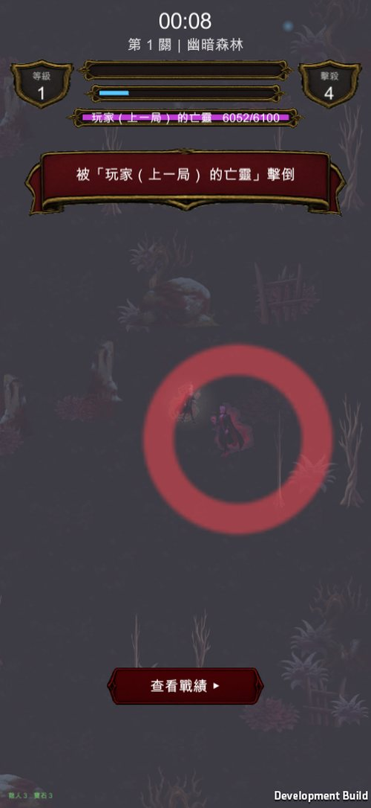

手搓廣告遊戲選集 · 吸血鬼復仇 · 高風險重構
傷害目標抽成 IDamageSink。範圍比預期小——你問的那個共同介面本來就存在。 9 項新舊路徑等價性測試逐位相同，亡靈實測把玩家打死了。美術成本仍然是 $0。
做完了，而且範圍比我原本評估的小。 關鍵是：你問的那個「共同介面」已經存在了。
ISpatialItem（Alive / Radius / Position）本來就在專案裡，而且
VrPlayer 與 VrEnemy 早就都實作了——不用新發明型別，也不用改繼承關係。
兩側的規模差一個數量級：
| 數量 | 資料結構 | |
|---|---|---|
| 敵人側 | 最多 1500 | 空間雜湊 SpatialHash<VrEnemy> |
| 玩家側 | 永遠只有 1 個 | 就一個物件 |
把 SpatialHash<T>、查詢、每幀配置全部泛型化，等於為了一個單一目標付出
全遊戲最熱路徑的代價。所以只抽「動詞」，做成 IDamageSink：
找目標 Nearest / NearestExcept / RandomNear
施加傷害 Area / Cone / AreaKnockback / HitOne
施加狀態 Slow / Root / Weaken
| 做什麼 | |
|---|---|
EnemySink |
每一個方法都是一行委派給既有的那支函式，參數一個都沒改 |
PlayerSink |
單一目標的距離判斷 → HurtBy（死因會記到） |
EnemySink 這樣寫是刻意的：既有 21 把武器走的是「同一份程式碼」，
不是「另一份看起來一樣的程式碼」。 這是「數值不變」最強的結構性保證。
| 檔案 | 改了什麼 |
|---|---|
IDamageSink.cs |
新檔（介面） |
VrDirector.cs |
兩個 sink 實作 ＋ 10 個傷害函式各加一個 sink 多載 |
VrWeapons.cs |
15 個 dir.X 呼叫點改成 sink.X ＋ 建構子帶 sink |
VrProjectile.cs |
加 Sink／Origin ＋ 一個「單一目標」分支 |
既有呼叫端一個都沒改。 舊的多載原封不動保留，內部委派給
EnemyTargets。
DebugSinkParity——同一幀、兩隻條件完全相同的靶，一隻走新的 sink 路徑、
一隻走舊的直接呼叫，比掉血量：
[PARITY] 範圍傷害 sink= 137.000 舊路徑= 137.000 ✓ 完全相同
[PARITY] 範圍(spell) sink= 91.000 舊路徑= 91.000 ✓ 完全相同
[PARITY] 範圍(quiet) sink= 55.000 舊路徑= 55.000 ✓ 完全相同
[PARITY] 扇形斬 sink= 73.000 舊路徑= 73.000 ✓ 完全相同
[PARITY] 範圍+擊退 sink= 64.000 舊路徑= 64.000 ✓ 完全相同
[PARITY] 減速 sink=True 舊路徑=True ✓ 完全相同
[PARITY] 易傷 sink=1.20 舊路徑=1.20 ✓ 完全相同
[PARITY] 定身 sink=True 舊路徑=True ✓ 完全相同
[PARITY] 最近目標 ✓ 挑到同一隻
v2 那組行為驗證也重跑一次，沒有回歸：易傷 1.20、引力 11.00→0.20、 擊退正值推遠／負值拉近、不朽之怒 3 層 1.24，全部跟改動前一樣。
四次量出來的數字每次都很像真的，這是最危險的地方：
| # | 錯在哪 | 症狀 |
|---|---|---|
| 1 | 靶擺 2.2 單位外，近戰半徑只有 1.63 | 十字斬、光環量到 0 |
| 2 | 沒清上一把還在飛的彈丸 | 千刃流星的 12 發打到下一把的靶（「飛刀 0、血鎖 600」） |
| 3 | 忘了 AutoResolve |
升級面板一開模擬凍住，而空間雜湊是在 Update 裡重建的——新生的靶從來沒進過雜湊，每一把都量到 0 |
| 4 | WaitForSeconds 吃 timeScale |
玩家被亡靈打死 → 死亡定格把 timeScale 壓到 0 → 觀察迴圈永遠等不完，探針卡死 |
第 3、4 條已經加進 docs/codegraph/invariants.md。

[WRAITH] 生成 玩家（上一局） 的亡靈 Lv40 血=6100 主武器=magicBolt
[SINK] 亡靈 存活=True 離玩家=3.35 武器數=1 彈丸數=1 玩家血=52.0
[SINK] 亡靈 存活=True 離玩家=1.12 武器數=1 彈丸數=0 玩家血=4.0
[SINK] 玩家被打死了 → 提早結束觀察
[SINK] 玩家血量 100.0 → 最低 0.0 ✓ 亡靈的武器真的打到玩家了
[SINK] 死因記錄 = 玩家（上一局） 的亡靈
那一行 WraithWeaponStep 呼叫的 wraithWeapons.Tick(...) 跟玩家的
weapons.Tick(...) 是同一個方法，只差在 loadout、位置、以及建構時給的 sink。
VrWraith.LoadSelf 寫死 f.Length != 5，但加了名次欄位之後 RecordSelf 寫的是 6 欄
——「自己上一局」這條退路永遠回 null，等於整個退路沒接上，而且不會報錯。
| 能力 | 結論 | 依據 |
|---|---|---|
| 撿寶箱／拾取物 | ❌ 打不開 | ChestStep 用的是 Player.Position，亡靈碰不到 |
| 撿寶石／升級 | ❌ 打不開 | GemStep 用的是 Player.Position ＋ Player.AddXp |
| 擊殺記帳／掉落 | ❌ 打不開 | RegisterKill / DropGem / MaybeDropChest 只在 Hit(VrEnemy) 裡，而 PlayerSink 完全不會走到那條 |
| 傷害其他敵人 | ❌ 打不開 | PlayerSink 的 10 個接觸點全部只碰 d.Player |
實測也印證了：亡靈在場期間玩家擊殺數 4 → 4，沒有幫玩家賺分。
這是刻意的設計決定，不是碰巧。 我在
PlayerSink的註解裡寫死了理由： 讓亡靈的落雷也劈到小怪的話，它會幫玩家清場，而那些擊殺會走Hit()→ 記進玩家的擊殺數、掉寶石、掉寶箱——等於「NPC 幫你賺分數」， 那不是這個功能的意思。如果你反而想要「亡靈也會誤傷小怪」的混戰感，那要另外決定要不要 讓那些擊殺算進玩家的分數。現在的版本不會。
另外兩個刻意的取捨（也寫在程式碼註解裡）：
VrEnemy 上，
而且「被亡靈定身」在一個靠走位活命的遊戲裡是不能接受的體驗。傷害照樣結算。亡靈現在會渲染那個玩家配裝裡每一把武器的真實視覺，所以我逐項掃過：
武器總數 28 把
缺圖示： （無）
缺專屬特效： （無）
家族共用特效缺：（無）
角色走路素材 5 個（亡靈外觀用），缺：（無）
之前做的 11 個圖示 ＋ 5 組特效剛好把缺口補滿了。 亡靈的外觀也還是 用那個玩家當時的角色走路素材 ＋ 紫紅染色，沒有任何新素材需求。
換句話說：折衷方案是 $0，改成真跑玩家武器還是 $0—— 因為武器的視覺本來就是為玩家做的，亡靈只是換一個位置播同一套。
| # | 事項 | 我的判斷 |
|---|---|---|
| 1 | 亡靈要不要誤傷小怪？ | 現在不會。要的話還得決定那些擊殺算不算玩家的分數（我傾向不算，不然變成 NPC 幫你刷分） |
| 2 | 玩家要不要吃亡靈的控場？（擊退／減速／定身） | 現在不吃。定身在這個遊戲會很難受，但減速或許可以接受 |
| 3 | 亡靈的環繞物／光環跟玩家的長得一樣 | 同一套素材。目前靠位置與紅框血條分辨，實機看起來還行，但混戰時可能會分不清 |
| 4 | 名字沒有髒話過濾 | 你要求秀真名，所以維持原樣。這條風險還在 |